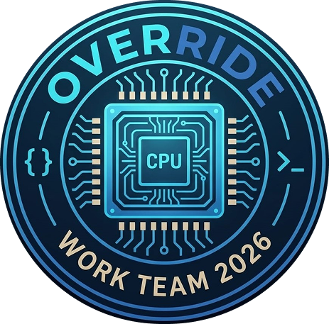

El grupo Override surgió en el primer cuatrimestre de la Tecnicatura en Desarrollo de Software. Desde entonces, fuimos atravesando distintos proyectos que no solo pusieron a prueba nuestros conocimientos, sino también nuestra capacidad de organizarnos, adaptarnos y crecer.
En ese camino, no solo nos fortalecimos como equipo, sino también como amigos. Aprendimos a confiar, a apoyarnos en los momentos complicados y a celebrar cada logro, por pequeño que fuera.
A lo largo del proceso, entendimos que programar no es solo escribir código: es debatir ideas, equivocarse, corregir y volver a intentar. Cada desafío nos ayudó a mejorar nuestra comunicación y a trabajar de manera más coordinada.
Cada integrante aporta una perspectiva única y habilidades diversas, lo que nos permite abordar los proyectos con creatividad, pensamiento crítico y una mirada integral. Esta combinación nos da la capacidad de desarrollar soluciones más completas y eficientes.
Hoy, Override es más que un grupo de estudio: es un equipo sólido, construido sobre el compromiso, el aprendizaje constante y la amistad. Nuestro objetivo es seguir creciendo como desarrolladores, enfrentar nuevos desafíos y crear soluciones innovadoras juntos.
Decisión: Elegimos una web simple y responsive.
Dificultad: No sabíamos cómo organizarnos.
Solución: Dividimos tareas por integrante.
Decisión: Usar Flexbox para layout.
Dificultad: Problemas de alineación.
Solución: Ajustamos propiedades CSS.
Cambio: Rediseñamos la portada.
Dificultad: Conflictos de estilos.
Solución: Reorganización del CSS.
Decisión: Usar Git para trabajar en equipo.
Dificultad: Conflictos al hacer merge.
Solución: Aprendimos a resolver conflictos y organizamos ramas.
Decisión: Publicar la web en Vercel.
Dificultad: Recursos que no cargaban en producción.
Solución: Corregimos rutas relativas y estructura de archivos.
Decisión: Optimizar para distintas pantallas.
Dificultad: Elementos desordenados en pantallas pequeñas.
Solución: Uso de media queries y ajustes de diseño.